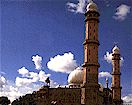
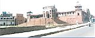

Bhopal offers a mix of traditional splendor at its very best and a feel of the modern city. With lush green environs coupled with natural beauty within the city limits as well as surrounding it. Bhopal is an ideal place to unwind oneself. If that is not enough, an era of Nawabi opulence with historic monuments in its full architectural grandeur awaits you in Bhopal.
This is the largest mosque in the country. The building of this mosque was begun by Shah Jehan Begum (1868-1901) but was incomplete on her death and was completed only after 1971. The most impressive features of the mosque are its main hall with inter-arched roof, broad facade, spacious courtyard, and smooth marble flooring.
It is the center of attraction for local as well as foreign tourists which is located on a hill near to upper lake in natural surroundings. Wide spread lake water,turning roads,sweet murmurs of birds on the trees,cold waves, peaceful atmosphere and the natural beauty of van vihar give a lot of self enjoyment. Van Vihar is spread over an area of 445 hectares. There are many wild animals like Tiger,Leopard,Panther are a treat to watch.
Jama Masjid is located at the centre of chowk bazar, a busy business centre of Bhopal.This was built in 1837 by Kudsia Begum. This Masjid was completed in 24 years. To built this masjid , an amount of Rs. 60.5 lakhs was spent. This beautiful mosque has gold spikes in the minarets of this beautiful mosque.
It is situated near Raj-Bhavan and old assembly hall. It came into existence on 31st May,1977. Covering one hectare area fish house is built in fish like structure. It attracts visitors a lot. Fish house is a double storey structure. Upper portion has forty glass aquariums, where various species of living and colorful fishes can be seen. In the Fish house you can see Golden Shark,paradise blue,Rosy Barb,King Kobra,Golden plata,Golden Gormi, Tiger Barb,Black Moor and King Zebra.
In the lower section are 26 big aquariums. Here is kept collection of fishes brought from state and national lakes,rivers and ponds,Among these can be seen Rohu, Katla, Mirgal, Sawal, Padin, Collet, Ticto, Pencil-Fira and Bam fish. Fish hose is open for visitors from 1st April to 30th Sept from 1.00 PM to 8 PM and from 1st October to 31st March from 12.00 PM to 7 PM.
Moti Masjid is architecturally akin to Jama Masjid in Delhi.Moti Maszid It was built in 1860 by the Sikandar Jehan Begum daughter of Kudsia Begum (Sikandar Jehan).
This is a science museum located on the picturesque Shyamala Hills. This centre houses about 300 science exhibits in ‘Invention’ and ‘Fun Science’ galleries. ‘Taramandal’ and Planetarium at the centre helps the students and enthusiasts study the astral and mysterious world of stars, galaxies and the universe. Stargazing sessions are organized at the planetarium for those who want to have a real close view of these luminous bodies.
Top